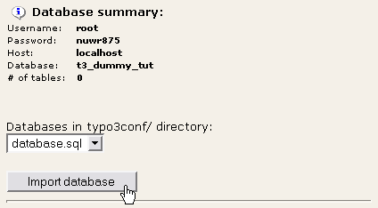
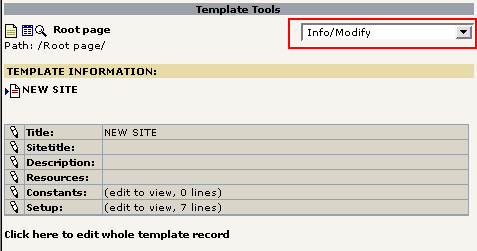

Extension key: doc_tut_templselect
Copyright 2003-2004,
This document is published under the Open Content License
available from http://www.opencontent.org/opl.shtml
The content of this document is related to TYPO3
- a GNU/GPL CMS/Framework available from www.typo3.com
Modern Template Building, Part 1 (MTB/1) 1
Introduction 1
What does it do? 1
The Basics 4
Introduction 4
Getting started - install the "dummy" package 4
Creating a page structure 5
Page Tree and Template Records explained 7
Basics of "Setup-field" instructions 10
More examples of PAGE and cObjects 11
PAGE object revisited 16
Part 1: Integration of an HTML template 20
Implementation of a CMS 20
The HTML template 21
Basics of the TEMPLATE cObject 24
The Template Auto-parser Extension 26
Putting it all together 30
Creating the menu 33
Inserting page content 37
Adding XHTML compliancy 43
Cleaning everything up a bit 45
Some HTML-design considerations 46
End note 50
This extension is a from-scratch tutorial about how to build a CMS-powered website with TYPO3 based on a HTML-template.
For developers on beginner level.
The website you will be guided to build will look like this:
The site consists of an area for a dynamic menu (left) and dynamic page content (right) - the rest is static design from the HTML template.
The goal of the tutorial is to equipt you with the state-of-the-art techniques for creating TYPO3 powered websites. It will allow you a quick hands-on experience with the system and provide you with a overall understanding of the factors involved in website production with TYPO3.
If you think this tutorial is too long and want something shorter, please just find another CMS because nothing as powerful and complex a tool as TYPO3 can be described in less space. And even this tutorial is just outlining the over all picture.
Just because TYPO3 costs no money it will not take no time to learn for a developer! It takes a serious time investment and dedication - just like any commercial alternative on its level. So be forewarned. Flying aircrafts takes skills and therefore time to learn. Hopefully this tutorial will get you as quickly as possible onto the launch ramp.
The tutorial is divided into four sections:
The Basics - a newbee introduction to building websites with TYPO3, template records, TypoScript and Content Objects (cObjects). Any person who wants to develop with TYPO3 should be familiar with the concepts described here.
Part 1: Integration of an HTML template - this part aims specifically at intermediate HTML-webdesigners with a limited amount of technical knowledge.
Part 2: Creating a Template Selector - this part aims at intermediate web developer with good knowledge of PHP, SQL and programming concepts in general.
Part 3: Extending the Built-In Access Scheme - for advanced TYPO3/PHP-developers.
Notice: Part 2 and Part 3 are found in another document, in the extension "doc_tut_templselect2"
You can jump onto any part you like directly. However if you follow the tutorial from the first to the last section you will find the sections to be sequential and that may give you the best step-by-step experience. However the step between the tutorials may require that you gain some experience first!
This tutorial has all its files contained in a TYPO3 extension. Extensions normally contain scripts and resources that extend the capabilities of TYPO3. However this tutorial extension does not interact with TYPO3s core if you install it - it merely serves as a vehicle for transporting the tutorial files to your server and for presenting the tutorial document online on typo3.org.
Therefore to follow this tutorial, first install the dummy-package (see The Basics section) and then import the extension "doc_tut_templselect" from TER (TYPO3 Extension Repository) with the EM (Extension Manager) and you will have all files at hand on your server when you need them.
This tutorial document can either be read online or you can download it as a SXW file from typo3.org for your convenience.
You don't have to pay for reading this document. However it has taken the author, Kasper Skårhøj, a full week to prepare, write and complete. None of this work was paid. If you or your company find it useful and it makes you better fit for serving powerful websites to your customers, please consider a donation! You cannot feed me by shoulder padding alone. Otherwise this tutorial could be the last one...
This section will quickly introduce the newbee to how TYPO3's frontend works. What are TypoScript Templates, what are content objects, what are HTML-templates. If you know these basics well already, you can skip ahead to the next section, "Integration of an HTML template". However you will need to install the dummy-package and create a set of pages inside. This is discussed below.
All developer newbees to TYPO3 regardless of experience in other fields.
Some parts will refer to technologies like SQL, HTML, CSS and PHP. The content is generally of a technical sort since it takes you through the installation of the dummy-package and explains the basics of the frontend template engine in TYPO3.
To get started real quickly we will install a blank file framework and database for TYPO3 and the best way to do this is by using the "dummy" package. A "package" consists of the general TYPO3 source code mixed with local site related files and possibly database content - altogether comprising a full website. In the case of the dummy-package this will be a empty website with no content. But that is highly useful for starting up new projects.
So get the dummy-package and install it on your webserver. After unzipping the package you just hit the index.php file and you will be guided through these steps.

For these steps to complete nicely you will have to make localconf.php writable (you will be told if it isn't!) and have the database username and password at hand.
The first thing to do now is to create a page structure we can use for this tutorial. A good page structure contains pages on at least two levels. However we must start with a root page in any case:
Enter a page title, unhide the page and save it:
You could proceed in this way to create your page structure. However there is a great wizard for doing this much easier. Just go to the "Functions" module, select wizards and the "Create multiple pages" wizard, enter a bunch of page titles and press the "Create pages" button.
(The "Create multiple pages" wizard requires the extension "wizard_crpages" to be installed.)
This should result in this nice page tree:
Now, create a new more pages so you have something like this:
Click a page icon and select "Show":
The result from viewing the "Licensing" page will be a screen something like this:
The page "Licensing" had the uid "5" and viewing the content of that page is done by sending the "id=5" parameter to the index.php script of the frontend.
Now, the message is "No template found". This means that the frontend engine did not find any template record in the rootline of the page tree from the page with id 5. This calls for a little theory to explain:
TYPO3 is a multi-site CMS which means that you can have any number of separate websites contained in the same page structure. Each website in the page tree must have a root page which is indicated by placing a template record on that page. This template record must have the "Rootlevel" flag set. So when a template record with the "Rootlevel" flag set is attached to a page it simply means that "from this point and outwards starts a new website in the page tree".
The root line is another word for "path". For instance you might say that the page "License A" in my page structure has the path "TYPO3 > Root page > Licensing > License A". And if we send the id of the "License A" page to the index.php script, the frontend template engine will search the root line from the "License A" back to the page tree root for a template record that will define how this branch of the page tree should be rendered.
So what we will do now is to create a template record on the page "Root page". The most easy way is to use the "Template" module:
The next screen will show you this view from the "Template" module. You will use this for editing the template record later:

For now, look at the "Root page" with the "List" module instead:
As you can see there is a "Template" record located on the page "Root page".
This template record will contain the basic instructions to the frontend engine about how the website beginning from this point should be rendered, which features it has, how it is configured, etc. A template record is always needed to start any new website in TYPO3 (using the default frontend engine). However you can personally balance how much of your website design the template record will control directly; you can program a whole website directly inside a template record. You could also instruct the template record to immediately call a PHP function you have created which will render and return all the page content (based on XML, XSLT or other databases - whatever you fancy). You can also choose a middleway mixing the best of both worlds. This is what we do in this tutorial.
Looking at the content you will see these fields of specific interest:
The "Template title" is just the title of your template record - not displayed anywhere.
The "Website title" will be a prefix of the page title as found between the <title> tags of any page.
The "Setup" field is where you enter the instructions that make the frontend engine react in a certain way. These instructions are contained in a hierarchical information structure defined by the TypoScript syntax. Since the instructions from the "Setup" field is defined by the TypoScript syntax you will often find template records referred to as "TypoScript templates".
The "Clear constants" and "Clear setup" flags means that no TypoScript configuration code is inherited from template records earlier in the tree (closer to the root), if any. These flags should always be set for template records serving as main templates ("Rootlevel").
The "Rootlevel" flag simply means: "This template records marks the start of a new website".
Now, back to the viewing of the page "Licensing":
Now, something different popped up. This is what happend:
Request page with uid "5" (#1)
Select the first template record on this page (pid=5); Nothing found!
Since no template record on page with uid "5" was found, check the previous page in the root line.... (#2)
Select the first template record on this page, "Root page", (pid=1); A template record was found!
Since a template record was found on page with uid "1", check if the "Rootlevel" flag was set...
Yes, the "Rootlevel" flag was set. Fine, this is the start of a website. So...
Parse the TypoScript configuration of the Setup field.
Begin executing the instructions from the Setup field.
When a template record is in place the main point of interest now is the "Setup" field of that template. In this field you enter a set of instructions that will determine what happens when we hit a page in the frontend.
The best way editing this field is by the Template module using the Info/Modify view:
Click the edit icon and lets go:
Here comes a short explanation:
First we define a new "Toplevel Object"
(TLO) called "page". Object type is "PAGE" (you
can also define a FRAMESET, see TSref). Instead of "page"
you could use other strings except a list of reserved TLO's, see
TSref
about Toplevel Objects.
As a property for the "page"
object we define the obligatory property, "typeNum",
and set its value to 0 (zero).
What all this means is that the Toplevel Object "page" will now be the default handler of any request sent to a page within the branch of the page tree where our template record marks the beginning of a website.
Now we want to instruct the "page" object what to do. Basically we need to look up the possible properties for PAGE objects in the TSref. Some properties are meta properties like the "config" or "includeLibs" property. Others are there to define what HTML output this PAGE object will generate.
The most significant set of properties for PAGE objects is the numerical array of content objects (cObjects). Each of these content objects can render a string of HTML-content which altogether makes up the content between the body-tags of the page.
In the example above there is a very simple content object - TEXT - defined for the index "10" of the numerical array of content objects in the PAGE object, "page". This cObject has the property "value" set to "HELLO WORLD!". The effect is that this string is returned from the cObject and becomes the content between the page bodytags:
You can see the set of properties for the TEXT cObject here.
Before we move on; please notice that TypoScript is not a procedural programming language. You might easily be lead to think this and if you have experience with other programming languages and how they work this is a dangerous cocktail since you will be quite confused. In reality, TypoScript merely configures the system to act in a certain way.
In order to explain what TypoScript really is and point you to the difference between this and how it is used in TYPO3, you can look in this document explaining the basics.
This section will just take a few more examples of PAGE and cObjects in order to let you grasp the concept fully. Understanding this allows you to understand "TypoScript templates" when the structures become more complex.
What happens if you enter another content object:
# Default PAGE object: page = PAGE page.typeNum = 0 # Content object one: page.10 = TEXT page.10.value = HELLO WORLD! # Content object two: page.20 = TEXT page.20.value = HELLO UNIVERSE!
(BTW, lines starting with "#" or "/" are comments.)
Output:
<body bgcolor="#FFFFFF"> HELLO WORLD!HELLO UNIVERSE! </body>
So - as expected more content objects will just be concatenated!
What if the order of definition is changed?
# Default PAGE object: page = PAGE page.typeNum = 0 # Content object two: page.20 = TEXT page.20.value = HELLO UNIVERSE! # Content object one: page.10 = TEXT page.10.value = HELLO WORLD!
Output:
<body bgcolor="#FFFFFF"> HELLO WORLD!HELLO UNIVERSE! </body>
The same - the order of rendering is according to the index in the array.
What if we want the TEXT cObject to insert the page title?
Then you will have to look up in the TSref to see if the TEXT cObject has any properties that allows you to instruct it to do so. It seems that it has. Apart from the "value" property on the same level the TEXT object also has "stdWrap" properties (click here) which can be used to fetch and process data dynamically.
Since the rendering of the cObject TEXT is done in the main scope of the PAGE Object the current record will be the current page record. So referring to a fieldname with the stdWrap property "field" will fetch content from the current page's record. Here the field named "title" will carry the page name (this of course requires knowledge about what fields are available in the pages table!):
# Default PAGE object: page = PAGE page.typeNum = 0 # Content object outputting current page title: page.10 = TEXT page.10.field = title
Output:
<body bgcolor="#FFFFFF"> Licensing </body>
Since the current page was the "Licensing" page, that was the title in the output!
Now that we are playing with the "stdWrap" properties we can wrap the value, process it in different ways etc:
# Default PAGE object:
page = PAGE
page.typeNum = 0
# Content object outputting current page title:
page.10 = TEXT
page.10 {
field = title
crop = 8 | ...
case = upper
wrap = This is the truncated page title: <b> | </b>
}
(Notice how I changed the formatting in TypoScript so the properties was encapsulated in curly braces. This syntax of TypoScript makes it easier to assign many properties on the same level but the end result is no different from prefixing all the properties with the full object path "page.10".)
Output:
<body bgcolor="#FFFFFF"> This is the truncated page title: <b>LICENSIN...</b> </body>
Notice how the wrapping string was wrapped around the page title which was further set in uppercase and truncated to max. 8 chars with "..." appended!
We could have achieved the same output by another cObject called "HTML" - the only difference is that all the stdWrap properties are properties to the "value" property of the HTML cObject - not properties of the cObject itself:
# Default PAGE object:
page = PAGE
page.typeNum = 0
# Content object outputting current page title:
page.10 = HTML
page.10.value {
field = title
crop = 8 | ...
case = upper
wrap = This is the truncated page title: <b> | </b>
}
It's a question of personal preference and style whether you use TEXT or HTML cObjects.
You can easily insert content from PHP scripts if you like to. This is a very recommended practice if you need conditional output just a little above the most basic level since the cObjects and their properties doesn't offer "procedural programming" at all - remember they are just pre-programmed objects reacting on a set of properties, nothing more.
So the USER cObject is what you need.
First, lets create a PHP-file in fileadmin/userfunctions.php:
<?php
class user_functions {
/**
* Multiplies the current page ID with $conf["factor"]
*/
function multiplyTest($content,$conf) {
$currentPageUid = $GLOBALS['TSFE']->id;
$factor = intval($conf['factor']);
return $currentPageUid * $factor;
}
}
?>
Then lets configure a cObject of the type USER to call this function with a single parameter, "factor":
# Default PAGE object:
page = PAGE
page.typeNum = 0
page.includeLibs.some_random_id_string = fileadmin/userfunctions.php
page.config.admPanel = 1
# Content object outputting current page title:
page.10 = HTML
page.10.value = The page ID, {field:uid}, multiplied with 15 is:
page.10.value.insertData = 1
page.10.value.wrap = <b> |</b> <br />
page.20 = USER
page.20.userFunc = user_functions->multiplyTest
page.20.factor = 15
And the output should be:
As you can see we defined a few "meta-properties" not directly related to content output:
page.includeLibs.some_random_id_string = fileadmin/userfunctions.php page.config.admPanel = 1
"includeLibs" is a property that allows you to configure a list of PHP-files (classes and function libraries!) to be included before starting the rendering of the page. "config" allows for a whole lot of configuration options about general behaviour of this PAGE object. In this case the Admin Panel was added in the bottom of the page.
You really should take a few minutes to look at this example. Notice how the property "factor" of the USER object was available in the PHP-function. Notice how the PHP-function retrieves the page ID. Notice how the "admin panel" was included. You can learn a lot from playing a little with this example. Let your fantasy loose for a while since this can give you a good feeling of control.
The Object Browser in the Template module is an indispensable tool for verifying the hierarchical information structure of your template records:
As you can see the TypoScript values are parsed into this nicely organized tree. This lets you verify if every property you have set is at the correct place and even allows you to edit a single value if you make sure "Enable object links" is checked:
Going back to "Info/Modify" you can see that the template Setup field has been modified:
The Object Browser is not intelligent enough to go and change the line with "page.20.factor = 15" - it just inserts a new line in the end which will override any previously set value. You can clean it up manually. The whole point is that the Object Browser provides a fool-proof way of setting these values since the correct object path will always be used.
We could in fact use this situation to demonstrate "conditions". A very basic condition is to check for the browser:
# Default PAGE object:
page = PAGE
page.typeNum = 0
page.includeLibs.some_random_id_string = fileadmin/userfunctions.php
page.config.admPanel = 1
# Content object outputting current page title:
page.10 = HTML
page.10.value = The page ID, {field:uid}, multiplied with 15 is:
page.10.value.insertData = 1
page.10.value.wrap = <b> |</b> <br />
page.20 = USER
page.20.userFunc = user_functions->multiplyTest
page.20.factor = 15
[browser = msie]
page.20.factor = 30
page.10.value = The page ID, {field:uid}, multiplied with 30 is:
[global]
In Microsoft Internet Explorer this will look like:
In all other browsers it looks like:
Well, this should not be a full fledged course in making template solely by cObjects - in this manual we will mainly use the TEMPLATE, USER and HMENU cObjects and combine them with predefined TypoScript code from static templates to meet our objectives. The final autority on objects and properties is the TSref and if you want examples of usage for each object-type please look in TypoScript by Example.
However I would like to finish off with two points:
In this example below there is not only one PAGE object defined. Also the TLO "another_page" is defined as a PAGE object but the "typeNum" property is set to "1". This means that the "page" PAGE object is the handler of default page requests while the "another_page" PAGE object becomes the handler of page requests where the "&type=1" parameter is set in addition to the id-parameter:
page = PAGE page.typeNum = 0 page.10 = TEXT page.10.value = HELLO WORLD! another_page = PAGE another_page.typeNum = 1 another_page.10 = TEXT another_page.10.value = HELLO UNIVERSE
The output will be:
And the object tree:
Quickly it becomes very practical to divide the TypoScript configuration code of your templates into related units and then assemble them all in the end of the template by copying them into the right positions. This might even include separation of the units into a hierarchy of included template records or static templates thus allowing for reuse of TypoScript. You will learn about that later.
The main feature of TypoScript that allows this is the syntax for copying one branch of the object tree to another. Consider this example:
# Make temporary version of the first cObject: temp.world = TEXT temp.world.value = HELLO WORLD! # Make temporary version of the second cObject: temp.universe = TEXT temp.universe.value = HELLO UNIVERSE! # Default PAGE object: page = PAGE page.typeNum = 0 page.10 < temp.world page.20 < temp.universe
The result is - of course - this:
<body bgcolor="#FFFFFF"> HELLO WORLD!HELLO UNIVERSE! </body>
If you look in the object browser you can see, that the objects from "temp. ..." has been copied to the paths "page.10" and "page.20". However we might expect seeing the "temp." TLO in the tree, but we don't. The reason is that the TLOs named "temp." and "styles." are unset again after parsing the TypoScript since they are reserved as temporary object spaces available only during parsing - not after parsing.
If we wanted our objects to stay in the tree we could do that by using another TLO:
# Make temporary version of the first cObject: MY_TLO.world = TEXT MY_TLO.world.value = HELLO WORLD! # Make temporary version of the second cObject: MY_TLO.universe = TEXT MY_TLO.universe.value = HELLO UNIVERSE! # Default PAGE object: page = PAGE page.typeNum = 0 page.10 < MY_TLO.world page.20 < MY_TLO.universe
... and the TLO "MY_TLO" is still there:
This also means that we can create a reference to the objects at MY_TLO.* since references to cObjects requires them to exist in the structure during after parsing is done (opposite to the "temp" and "styles" TLOs). Thus the script can be rewritten to this:
# Make temporary version of the first cObject: MY_TLO.world = TEXT MY_TLO.world.value = HELLO WORLD! # Make temporary version of the second cObject: MY_TLO.universe = TEXT MY_TLO.universe.value = HELLO UNIVERSE! # Default PAGE object: page = PAGE page.typeNum = 0 page.10 =< MY_TLO.world page.20 =< MY_TLO.universe
It seems like a little change but the impact is huge since objects are NOT copied, merely referered to:
There are some practical consequences and drawbacks to this method. However the upside to references is that a cObject defined at one path in the object tree can be used multiple times by references from within the structure without spending memory on duplicates - which also becomes hard to manage if you want to override properties of all duplicates in the tree. An example of this problem is found in the end of Part 2 in this tutorial.
Notice: References like this are not a part of the TypoScript syntax as such. It's a feature provided internally by the cObjects and thus references can be used only when refering to cObjects, not any other kind of objects or properties (unless noted).
Finally you must be aware that when you make changes to a template record through the Template module the "Cache-all" is cleared. This must be done because when TYPO3 parses a TypoScript template the resulting structure is saved in the cache so it can be quickly fetched again for the next page delivery. However this means that changes made to template records directly through the List module for instance will not clear the cache - and then you must do it manually with the link under the menu in the left frame.
Generally, before you announce any strange behavior as a bug, please make sure that it wasn't caching of either templates or extension files that bugged you!
The production of a website with a CMS requires the involvement of more components than if the website was made of pure, static HTML files. The inherent idea of a CMS is that content is stored separately from the presentation markup. Some CMSs store content in XML files, other CMSs use a relational database. The difference has technical pros and cons but the main idea is the same: "content separated from colors".
When TYPO3 generates webpages the frontend engine combines unformatted content from the data source (database) with a HTML template defining all the formatting. In this process the template record is the control element that instructs the frontend engine on how to do this work of combining.
On this drawing you can see how the template record is the control element - the "program" - to the frontend engine which in turn finds the content in the database, reads the template, inserts the content in the designated placeholders of the template and outputs a nice webpage!
In most web agencies a group of people is working together on the creation of a website. In this group we will find a graphic designer, a developer and a content contributer (at least for the initial content). Each of these persons have different skills and will thus work with the production of the site in different areas:
In the illustration above the various components of the CMS controlled website is assigned to a person each from the web team:
Mr. Raphael is the artist. Raphael has great skills for visual design, he knows Photoshop, he knows his Dreamweaver, CSS stylesheets, HTML etc. Raphael juggles with flash movies. But Raphael doesn't juggle with PHP, TypoScript, SQL and other technical issues. So Raphael makes the HTML-templates for us!
Mr. Benoit is a developer. He likes bits and bytes, he likes compiler directives, regular expressions, logic, PHP, SQL - and he will soon love TypoScript as well. However Mr. Benoit trusts a pair of good, blue jeans like every other programmer since hyped design, typography, combining colors and usability is really not written is his stars. Therefore Benoit is in charge of TypoScript configuration in the Template Records.
Mr. Picouto is concerned with the content. He is the marketing guy and he is dazzled by the work of both Raphael and Benoit who work wonders in his eyes, bringing ideas from paper to screen. Picouto himself is neither a programmer nor a designer, but he has a message to communicate. And through TYPO3s backend he can create the content he desires with no need for technical skills beyond that of a word processor.
So we have three characters with unique skills which leads to the conclusion that the production of a CMS based website is not a walk in the park unless you possess skills in all three areas mentioned above: Visual, Technical and Marketing. This is usually the case in a web team, but more unusual for individuals. So be forewarned. (If you are less qualified than this you will need to either learn a lot or simply use Standard Templates which are fixed designs you can deploy with only a little configuration. Not covered in this tutorial.)
In this tutorial I will show you how Raphael, Benoit and Picouto have to cooperate in order to produce modern websites where each member of the team can roam freely in his own domain, using the tools he loves the most to produce easily maintained websites implemented to fit any conceivable design you can dream of. With TYPO3.
Intermediate webdesigner from HTML/CSS background, not necessarily a web programmer.
In order to complete this section of the tutorial you should have a good knowledge of HTML and CSS. Further you must have a working TYPO3 database with the page tree created in an earlier chapter of this tutorial. Finally you might need an understanding of programming concepts in order to understand everything fully. But don't worry - you are clearly told everything you need to do - just pay attention and take time to understand the examples.
The web team has just got a new customer - Main Dish & Son - and Raphael, the artist on the team, has produced the website template as a regular HTML file:
This HTML file is put into the directory "fileadmin/template/main/" relative to the TYPO3 installation (the dummy-package).
To follow this tutorial you should now copy the contents of the folder "part1/" from this tutorial extension into the folder "fileadmin/template/main/". If you didn't import the tutorial extension "doc_tut_templselect" from TER you should do that now!
Further, if you bypassed the previous section about TypoScript, make sure to at least create the page tree as described in the chapter “Creating a page structure” and possibly a blank template record.
Well, back to Raphaels work; the template HTML file is really just a regular HTML page. But when TYPO3 imports this file as a template the point is to make certain parts dynamic. This includes the menu to the left and also the section with dummy content to the middle/right.
Looking into the source code of the HTML template reveals a simple XHTML compliant document referring to a stylesheet and using a single table to position various elements on the page:
Here follows some commentary on this HTML template and the challenges we are facing:
This section from the header of the document
must go into our webpage since it refers to the stylesheet
used.
Challenge: We must make sure to extract this part of the
document into the header section generated by the frontend engine!
The menu on the left is made by a
<div>-section per menu item. Each of these <div>-elements
has a class assigned to it. By this class name the design of the
element is controlled in the CSS stylesheet.
This is a very
clever way to create a menu since each element consists of a minimum
amount of HTML-code (good for TypoScript implementation), they are
easily repeatable (necessary when the menu will be dynamic).
Challenge: We must substitute the dummy-menu here with a
dynamically generated one!
This is dummy content that Raphael put into
the template file just to get the visual impression right. Notice
how it is formatted with <h1> and <p> tags (using the
class "bodytext") - this is clever since the dynamic
content inserted by TYPO3 later on will use those tags / classes for
formatting as well! (Raphael must have cheated with some TYPO3
experience on beforehand, eh?)
Challenge: We must substitute the
dummy-content with dynamically generated page content.
This break tag just puts a little space underneath the content so the footer is not too close to the bodytext of the page.
Finally you should notice how the table cells where the menu and content is positioned has been tagged with an id-attribute. This is not only used by the stylesheet! There is a clever point to the use of these id-attributes! But first some theory about HTML templates:
First create a new file, fileadmin/template/test.html, with this content:
<!DOCTYPE HTML PUBLIC "-//W3C//DTD HTML 4.0 Transitional//EN"> <html> <head> <title>Untitled</title> </head> <body> <!-- ###DOCUMENT_BODY### --> <h1> <!-- ###INSIDE_HEADER### --> Header of the page <!-- ###INSIDE_HEADER### --> </h1> <!-- ###DOCUMENT_BODY### --> </body> </html>
(Can be found in the tutorial extension directory as "misc/test.html")
Then put this into the Setup field of your template record:
# Template content object:
temp.mainTemplate = TEMPLATE
temp.mainTemplate {
template = FILE
template.file = fileadmin/template/test.html
}
# Default PAGE object:
page = PAGE
page.typeNum = 0
page.10 < temp.mainTemplate
This will put a cObject of the type "TEMPLATE" at position "page.10". The "template" property of the TEMPLATE cObject is defined to be another cObject of the type "FILE" which reads the newly created file, "fileadmin/template/test.html". Properties of the TEMPLATE cObject can be explored here.
Now, if you save the changes to the Setup field and hit the frontend you should see this:
And looking in the source code tells us that basically the TEMPLATE cObject just read the file and returned it raw:
Now comes the point of the TEMPLATE cObject; It not only reads in a HTML-file - it also allows us to extract subparts inside of it and replace them with dynamic content!
A subpart is defined as the content between two similar marker strings wrapped in ### and encapsulated in an HTML-comment (although optional). The "test.html" file has two subparts, the "DOCUMENT_BODY" subpart and the "INSIDE_HEADER" subpart. As you can see the subpart markers are encapsulated in HTML-comment tags so that they are not visible.
Now, try to change the Setup field of the template record to this:
# Template content object:
temp.mainTemplate = TEMPLATE
temp.mainTemplate {
template = FILE
template.file = fileadmin/template/test.html
workOnSubpart = DOCUMENT_BODY
subparts.INSIDE_HEADER = TEXT
subparts.INSIDE_HEADER.value = HELLO WORLD!
}
# Default PAGE object:
page = PAGE
page.typeNum = 0
page.10 < temp.mainTemplate
Hit the frontend and the HTML source should be like this:
The changes we made to the TEMPLATE cObjects properties has done this:
First and foremost the TEMPLATE cObject was instructed to work on the subpart marked with "###DOCUMENT_BODY###" only - thus the redundant header and body-tags were cut away!
Then secondly the subpart marked with "###INSIDE_HEADER###" was replaced with the content rendered by the TEXT cObject defined for the property "subparts.INSIDE_HEADER" of the TEMPLATE cObject.
This should be fairly easy to understand. From here all we need to do is point the source file to Raphaels template, fileadmin/template/main/template_1.html, insert similar subpart markers and then replace the dummy menu and dummy content with dynamically generated menus and real page content elements!
The obvious to do might seem to just edit Raphaels template. However in my experience you can't trust that HTML-editors broadly speaking does not remove or rearrange HTML-comments inside the document if Raphael should change the template file later on. Just imagine that Raphael did some changes to the template with DreamWeaver and the subpart markers were silently removed - the template would seize to work instantly! Further the paths pointing to the stylesheet and images inside of Raphaels template are relative to the folder [domain]/fileadmin/template/main/ - not [domain]/ which is where the HTML content will be displayed by TYPO3s frontend engine! So all the paths would need to be prefixed!
This calls for a better solution. Now, please import and install the Template Auto-parser extension - that is the answer to all your dreams...
Go to the Extension Manager, import extension from online repository:
Find the extension "automaketemplate", click the import icon:
This should be the result on success:
Go back, select "Available Extensions to Install" and install the extension:
After pressing the "Make updates" button, go back to the Template module and check the Object Browser:
The extension should have added a USER cObject at the object path "plugin.tx_automaketemplate_pi1" as you see above. This cObject can now be used by us instead of the FILE cObject to read Raphaels template file and have it automatically marked up and relative paths corrected!
As with any extension for which we want to know anything we should consult the manual for the extension on typo3.org. Click this link and you will see the table with properties for the cObject.
To make it very clear to you what the Template Auto-parser does I'll simply insert the output from the plugin as the only content on the page and further I will configure the PAGE object "page" to not output the usual header and footer content.
This is the Setup field content of the template record:
# Configuring the Auto-Parser:
plugin.tx_automaketemplate_pi1 {
# Read the template file:
content = FILE
content.file = fileadmin/template/main/template_1.html
# Here we define which elements in the HTML that
# should be wrapped in subpart-comments:
elements {
BODY.all = 1
BODY.all.subpartMarker = DOCUMENT_BODY
HEAD.all = 1
HEAD.all.subpartMarker = DOCUMENT_HEADER
HEAD.rmTagSections = title
TD.all = 1
}
# Prefix all relative paths with this value:
relPathPrefix = fileadmin/template/main/
}
# Default PAGE object:
page = PAGE
page.typeNum = 0
page.config.disableAllHeaderCode=1
page.10 =< plugin.tx_automaketemplate_pi1
Save template and hit the frontend. You should see exactly what the fileadmin/template/main/template_1.html would look like by itself:
And
so...? - you think. But this is rather cool and when you look inside
the source code of this page you will see why:
Now, as you can see two main things has happend:
A lot of blocks in the template file has automatically been wrapped in subparts! (1+2)
All relative links/references has been prefixed with the path "fileadmin/template/main/" (3)
This is because the Template Auto-parser was configured to handle "elements" like this:
...
elements {
BODY.all = 1
BODY.all.subpartMarker = DOCUMENT_BODY
HEAD.all = 1
HEAD.all.subpartMarker = DOCUMENT_HEADER
HEAD.rmTagSections = title
TD.all = 1
}
...
("Elements" are all tags having a start and end tag separately from each other, fx. the <td> tag. Tags with no end tag, fx. <img>, must be defined by the "single" property of the Template Auto-parser)
So the configuration of the elements says that
a) the element <body> should be wrapped with the subpart marker "###DOCUMENT_BODY###"
b) the element <head> should be wrapped with the subpart marker "###DOCUMENT_HEADER###". Further any <title> sections should be removed. (We don't want the <title> tag from Raphaels template replicated in our TYPO3 pages...)
c) All <td> elements found should be wrapped - but since no .subpartMarker value was defined only <td>-tags with a "id" or "class" attribute will be wrapped and then in a subpart marker corresponding to the id/class value. Thus the tag <td id="menu_1"> will have the content inside of it wrapped in the subpart markers "<!--###menu_1###-->...<!--###menu_1###-->".
Now, how can we use this?
Well, the answer is that the Auto-parser allows Raphael to create templates based on modern CSS styling techniques with a conscious use of id and class attributes in the HTML-elements, and at the same time those attributes will serve as the "markers" that TYPO3 uses to replace portions of the template with the dynamic content! Easy for Raphael (the designer), less hazzle for Benoit (the developer) and good for Picouto's finances since less time is used on conversions and manual markup of templates with subpart markers!
Consider this illustation below. This is what we want to do:
The template file is read by the Auto-parser, the output is passed on to the TEMPLATE cObjects which substitutes subparts and finally inserted into the body and header sections of the TYPO3 page.
This will be done by the TypoScript below entered in the Setup field of your template record. It's a long listing, but try to spend a little time to understand it:
# Configuring the Auto-Parser for main template:
plugin.tx_automaketemplate_pi1 {
# Read the template file:
content = FILE
content.file = fileadmin/template/main/template_1.html
# Here we define which elements in the HTML that
# should be wrapped in subpart-comments:
elements {
BODY.all = 1
BODY.all.subpartMarker = DOCUMENT_BODY
HEAD.all = 1
HEAD.all.subpartMarker = DOCUMENT_HEADER
HEAD.rmTagSections = title
TD.all = 1
}
# Prefix all relative paths with this value:
relPathPrefix = fileadmin/template/main/
}
# Main TEMPLATE cObject for the BODY
temp.mainTemplate = TEMPLATE
temp.mainTemplate {
# Feeding the content from the Auto-parser to the TEMPLATE cObject:
template =< plugin.tx_automaketemplate_pi1
# Select only the content between the <body>-tags
workOnSubpart = DOCUMENT_BODY
# Substitute the ###menu_1### subpart with some example content:
subparts.menu_1 = TEXT
subparts.menu_1.value = HELLO WORLD - MENU
# Substitute the ###content### subpart with some example content:
subparts.content = TEXT
subparts.content.value = HELLO WORLD - CONTENT
}
# Main TEMPLATE cObject for the HEAD
temp.headTemplate = TEMPLATE
temp.headTemplate {
# Feeding the content from the Auto-parser to the TEMPLATE cObject:
template =< plugin.tx_automaketemplate_pi1
# Select only the content between the <head>-tags
workOnSubpart = DOCUMENT_HEADER
}
# Default PAGE object:
page = PAGE
page.typeNum = 0
# Copying the content from TEMPLATE for <body>-section:
page.10 < temp.mainTemplate
# Copying the content from TEMPLATE for <head>-section:
page.headerData.10 < temp.headTemplate
All
this leads to the following tree structure:
As you can see the "temp.mainTemplate" and "temp.headTemplate" cObjects were copied to their respective positions in the object tree. For each of them they carry a reference to the USER cObject of the Template Auto-parser plugin.
Notice that the object path "page.headerData" is a numerical array of content objects defining the content for the <head> section of the page. This is how you add content between the <head> tags of the TYPO3 generated pages.
The result looks like this:
Notice that the menu and content areas have been substituted with content from the TEXT cObjects which were just there as a test!
The HTML-source looks like this:
The <head> section without the <title> tag is inserted
The <body> section inserted, content substitutions performed
The ###header_1### and ###footer### subparts were not substituted since they were not defined at all in the "temp.mainTemplate" TEMPLATE cObject! So this is no error.
The ###menu_1### and ###content### subparts were correctly substituted as we expected since the "temp.mainTemplate" TEMPLATE cObject was in fact configured to do so.
So from Raphaels template TYPO3 automatically extracts the <head> and <body> content, corrects relative paths to images, links, forms and stylesheets, makes substitutions for dynamic content, and inserts each part in the <head> and <body> section of the output page from TYPO3.
The basic framework is now up and running - we just need to add some dynamic content to the menu and content areas! This is most effectively done by TypoScript cObjects for rendering menus and content elements.
The 2-level menu in the left side of the template must be generated dynamically to reflect the page structure from the backend. Although Raphael designed us a nice, clean template with a very simple markup for the menu items it is not the best solution to try and extract these parts by Auto-parser subparts; we should instead hard code it! This means that Mr. Benoit must manually look into Raphaels template, carefully identify what a single menu item consists of and then extract the parts and use them inside the template record to build up the object for generation of the menu. It also means that Raphael cannot change the basic construction of the menu without having Benoit reflecting the same changes in the template record! But if Raphael did his work cleverly it will not be needed either; CSS styling should be used for all visual effects.
First of all the cObject we will use to generate menus is the HMENU object. This object calls "menu objects" of the type TMENU or GMENU or GMENU_LAYERS etc. for each menu level we want (which one you use depends on the kind of menu you would like to render - textual, graphic, cascading layers etc.).
For each "menu-object" (that was fx. a TMENU or GMENU) you define general properties for the level it represents and in addition item-specific properties (eg. width and height of a GMENU graphical item). The item-specific properties are always defined for a specific state of the item. The normal state (NO) must always be defined, but in addition to this we could fx. define an active state of the item (ACT) - that means "how should the menu item look, if we are on a page equal to or below that page".
Well, the point of this tutorial is not to teach the details of the HMENU cObject and all derived issues. You should refer to the TypoScript by Example for that.
Now, take a look at the HTML source of Raphaels template:
As you can see he has used a <div> tag for each menu item regardless of level or state. The whole difference lies in the value of the class attribute! This is clever design since the markup becomes so simple that Benoit saves even more time on the implementation! :-) And the full, visual control lies outside of TYPO3 - in the CSS stylesheet.
Also notice how Raphael has provided a design for "active" menu items.
The implementation of this menu is extremely easy. It just goes like this:
First, define a temporary object somewhere in the top of the template record (before the definition of "temp.mainTemplate"):
# Menu 1 cObject
temp.menu_1 = HMENU
# First level menu-object, textual
temp.menu_1.1 = TMENU
temp.menu_1.1 {
# Normal state properties
NO.allWrap = <div class="menu1-level1-no"> | </div>
# Enable active state and set properties:
ACT = 1
ACT.allWrap = <div class="menu1-level1-act"> | </div>
}
# Second level menu-object, textual
temp.menu_1.2 = TMENU
temp.menu_1.2 {
# Normal state properties
NO.allWrap = <div class="menu1-level2-no"> | </div>
# Enable active state and set properties:
ACT = 1
ACT.allWrap = <div class="menu1-level2-act"> | </div>
}
Notice how the red lines contain the extracted HTML-markup that Mr. Benoit clipped from Mr. Raphaels template. Now it's hardcoded in the template record.
The only thing you need to do now is to copy this object to be the cObject of the "menu_1" subpart of the "temp.mainTemplate" cObject:
...
# Main TEMPLATE cObject for the BODY
temp.mainTemplate = TEMPLATE
temp.mainTemplate {
# Feeding the content from the Auto-parser to the TEMPLATE cObject:
template =< plugin.tx_automaketemplate_pi1
# Select only the content between the <body>-tags
workOnSubpart = DOCUMENT_BODY
# Substitute the ###menu_1### subpart with dynamic menu:
subparts.menu_1 < temp.menu_1
# Substitute the ###content### subpart with some example content:
subparts.content = TEXT
subparts.content.value = HELLO WORLD - CONTENT
...
(The red lines represent the change!)
... and the result speaks for it self:
Clearly the page structure (below) is reflected in the menu above!
And exactly how easy will it be to change the menu design? Well, try and edit the stylesheet in "fileadmin/template/main/res/stylesheet.css":
See! This whole approch allows you to put the major factors controlling the visual design - HTML template and stylesheet - outside of TYPO3 for direct and incredibly convenient access for the Mr. Raphael, the HTML/CSS-designer. And Mr. Benoit was required to perform only a minor job of TypoScript programming inside the template record - he simply configured the frontend engine to use Raphaels design work in the way that fits their preferred development style best!
Please refer to TypoScript by Example if you want to play more with the HMENU object and related stuff.
The most popular way of managing page content in TYPO3 is to create content elements on a page in the table tt_content. In fact I don't know of anybody not using this concept since it's so flexible, powerful and straight forward to implement. However it may break a bit with your preconceived ideas about encapsulating structured content in HTML-templates.
Content elements have numerous predefined types (Text, Text w/image, Bulletlist, Table, Login box, etc) and a static template with predefined TypoScript will usually render the elements for you out-of-the-box. This is really a treat! Since content elements has a type and for each type many additional options it's impossible to render content elements by the fixed concept of a HTML-template per element type. It just doesn't fit and you will know that when you have played a little with this. Therefore cObjects combined with PHP-functions are invoked to render the content with complex conditions.
So if we can't design content elements with HTML-templates, what can we do then? Well, if you use the most recent approach to rendering content elements - that will be the extension "css_styled_content" - then all content will be wrapped in primitive HTML-elements - which comfortably leaves the design decisions to your external CSS stylesheet!
Lets see how it works. First, let us create a content element:
In the List module, click the page icon of the page "License C", then select "New" and then in the right frame, click the content wizard link:
Select "Text with image to the right" and then the "Normal" column:
After entering the content in the element and saving it you should see something like this:
So we now have a content element in place on the page "License C":
To display the content element we need to include a static template which will provide all the many hundred lines of TypoScript code which will perform the rendering for us. This is done by editing the whole template record.
However the first thing you have to do is to install the extension, "css_styled_content":
Just click the Install button and press the accept-button on the next page.
(NOTICE: At the time of this writing (january 2004) the "CSS styled content" plugin is NOT complete! It is on the top-3 of Kaspers todo list and is scheduled for development immediately after the snowboard tour.)
Back to the template: In the Template module, click this link:
Then you should see the "CSS Styled Content" static file available in the box "Include Static (from extensions)":
Click it, save the template and look in the Template Analyzer:
The Template Analyzer shows the hierarchy of template records and static templates which may be attached to the current "main template record". By selecting the static template for inclusion it will simply be included before the rendering of the TypoScript code inside the template record "NEW SITE". This means that any object defined inside the "EXT:css_styled_content/....." static template can be copied and used in the NEW SITE template record. This is what we will do now since the included static template contains an object, "styles.content.get" which is a content object that selects all content elements from the "Normal" column of the current page:
So in the template record, change this part of the definition of the "temp.mainTemplate" object:
...
# Main TEMPLATE cObject for the BODY
temp.mainTemplate = TEMPLATE
temp.mainTemplate {
# Feeding the content from the Auto-parser to the TEMPLATE cObject:
template =< plugin.tx_automaketemplate_pi1
# Select only the content between the <body>-tags
workOnSubpart = DOCUMENT_BODY
# Substitute the ###menu_1### subpart with dynamic menu:
subparts.menu_1 < temp.menu_1
# Substitute the ###content### subpart with some example content:
subparts.content < styles.content.get
...
If you refresh the frontend for the page "License C" you should now see this:
In the HTML source code we see this:
Apparently the header of the content element was rendered in <h1> tags. If you select other "Layout" types for the header you will get the rendering in fx. <h2> instead (for Layout 2).
Each line of bodytext is wrapped in <p> tags with the class set to "bodytext". Thus you can specifically address the style of page content from content elements in your stylesheet! Notice how Raphael cleverly already designed the dummy content in the template files to use <p class="bodytext"> tags!
Every content element inserted will have a <a>-tag with the name value set to the uid of the content element. This is anchor points which can be used in the URL to go directly to a certain position on a page.
This is from the HMENU objects rendering of the 2-level menu. Just notice how the link is automatically pointing to the right page and even an additional onFocus handler is set.
Now, by copying this supposed content element, "styles.content.get", what is it really we are inserting in the object tree? Lets look with the Object Browser:
We find two interesting things:
The object path "styles.content.get" obviously contained a cObject of the type CONTENT. By looking at the attributes it seems reasonable to conclude that it selects records from the table "tt_content" ordering them by the field, "sorting". For more information look up the CONTENT cObject here.
Secondly a whole new TLO (Toplevel Object)
was defined - "tt_content". By default the CONTENT cObject
selecting records from "tt_content" (#1) will use this TLO
(also defined to be a cObject) for rendering each record found!
As
we can see the "tt_content" TLO is defined as a USER
cObject invoking a PHP function from the "css_styled_content"
extension - seems correct to me since that is the extension we
installed to be in charge of this! For details about that you should
consult
the documentation for the "css_styled_content" extension.
For the really curious we might even look inside the class "tx_cssstyledcontent_pi1" and check out the logic in there. Here is a snippet from the function main():
function main($content,$conf) {
$this->conf = $conf;
// This value is the Content Element Type - determines WHAT kind of element to render...
$CTypeValue = (string)$this->cObj->data["CType"];
$content="";
switch($CTypeValue) {
case "header":
$content = $this->getHeader().$this->render_subheader();
break;
case "bullets":
$content = $this->getHeader().$this->render_bullets();
break;
case "table":
$content = $this->getHeader().$this->render_table();
break;
case "text":
$content = $this->getHeader().$this->render_text();
break;
case "image":
$content = $this->getHeader().$this->render_image();
break;
case "textpic":
$content = $this->render_textpic();
break;
...If you want to create XHTML compliant websites you can also do that with TYPO3. Version 3.6.0 of TYPO3 is dedicated to XHTML compliance as far as possible (level: XHTML transitional).
For this tutorial you need to make sure that the HTML templates used are XHTML compliant. That is step one of course and something you have to ensure.
Next step is to make TYPO3 generate an XHTML doctype in the output. This is easily done by this simply TypoScript line put into the main template records Setup field:
page.config.doctype = xhtml_trans
Further, the menus should also be compliant. At this point special characters like “&” is just outputted as is. This should be avoided. So the menu TypoScript code should be changed with four additional lines (here highlighted with red):
# Menu 1 cObject
temp.menu_1 = HMENU
# First level menu-object, textual
temp.menu_1.1 = TMENU
temp.menu_1.1 {
# Normal state properties
NO.allWrap = <div class="menu1-level1-no"> | </div>
NO.stdWrap.htmlSpecialChars = 1
# Enable active state and set properties:
ACT = 1
ACT.stdWrap.htmlSpecialChars = 1
ACT.allWrap = <div class="menu1-level1-act"> | </div>
}
# Second level menu-object, textual
temp.menu_1.2 = TMENU
temp.menu_1.2 {
# Normal state properties
NO.allWrap = <div class="menu1-level2-no"> | </div>
NO.stdWrap.htmlSpecialChars = 1
# Enable active state and set properties:
ACT = 1
ACT.stdWrap.htmlSpecialChars = 1
ACT.allWrap = <div class="menu1-level2-act"> | </div>
}
This will make sure that the menu labels will be passed through the PHP function htmlspecialchars() which will convert eg. “&” to “&”
After doing this you can test the site with eg. Opera 7 which has a very convenient shortcut for compliance testing:
Just rightclick the HTML page, select “Frame”, then “Validate source”:
Opera will send the sourcecode of the page to “http://validator.w3.org/” automatically for you and on success you should see this screen:
We have now completed our website. Mr. Benoit and Mr. Raphael have done their jobs to the end and in the meantime Mr. Picouto might even have filled in all the content elements for each page in the tree? We don't know, but the basic website is in place, based on a totally regular HTML-file put into the folder "fileadmin/template/main/" with only the menu and content areas dynamically replaced as needed.
The only thing left is to organize the template record a little better. Even though the amount of TypoScript used is kept to an absolute minimum we can easily see that such a template record becomes large and unhandy very quickly. The solution is to create a series of template records for inclusion:
First you might create a whole new page on the root level of the page tree. Select the type "sysFolder" (means "storage space for any database element you want") and name it Template Storage.
Then create three template records there as seen here:
Don't set any of the "Clear" flags! Just copy the appropriate "temp.xxxx" object definitions from the "NEW SITE" template into these. The order is also insignificant in this list.
The next step is to include these three templates in the "NEW SITE" main template. So edit the "NEW SITE" template:
The order is important: the first listed template is included first and since the template record "ext: Main TEMPLATE cObject" makes copies of fx. the "temp.menu_1" object it must be included as the last one.
Save the template record and view the new structure with the Template Analyzer:
As you can see, first the static template is included, then the three "base templates" from our storage folder and finally the main template record. For each one you can click the title and look at the content below.
As you can see from this section of the tutorial implementing a HTML-template from a graphic designer is possible in a very comfortable manner, securing full backwards compatibility with his original work (since no markers need to be inserted manually in his HTML-template). Further it involves only familiar technologies like HTML and CSS - no confusing XLST stylesheets need to be build (although XSLT as renderer can be deployed on PHP-level by Mr. Benoit, should he desire to do so).
But although the freedom to Mr. Raphael, the designer, is almost total he still needs to understand the basics of dynamic and static content.
Mr. Raphael needs first and foremost to understand - probably together with the whole web team - which parts of the page are static parts and which are dynamic. Static parts are everything that TYPO3 does NOT touch. The dynamic parts are however supposed to be substituted with content coming from the data sources inside TYPO3.
When dynamic areas are identified, Raphael needs to make sure two things:
The part must be encapsulated in a single HTML-element. This could be a <div>-element, a <td>-element, a <span> element .
The encapsulating element must have either an id or class attribute which the Template Auto-parser plugin is configured to find and wrap in subpart markers. Fx. <td id="content"> for the table cell which must contain the content.
It's totally OK to let dummy content remain in the template file - after all it is just substituted with the dynamic counterparts.
We are in year 2004 now and it really is the time to say good bye to the <font>-tag, bgcolor-attributes and put it all into an external stylesheet. For a CMS implementation this technique serves the goal to keep using as many external technologies as possible and only utilize a necessary amount of CMS-specific technology (like TypoScript template records).
In this section of the tutorial the best example has been the 2-level menu:
<!-- Menu table cell: --> <td id="menu_1"> <div class="menu1-level1-no"><a href="#">Menu item 1</a></div> <div class="menu1-level1-no"><a href="#">Menu item 2</a></div> <div class="menu1-level1-act"><a href="#">Menu item 3 (act)</a></div> <div class="menu1-level2-no"><a href="#">Level 2 item</a></div> <div class="menu1-level2-no"><a href="#">Level 2 item</a></div> <div class="menu1-level2-act"><a href="#">Level 2 item (act)</a></div> <div class="menu1-level1-no"><a href="#">Menu item 2</a></div> </td>
Lets just look at a single element here (the red one above). This could also have been implemented something like this:
<!-- Menu table cell: --> <td id="menu_1"> <!-- Menu item level 1, begin --> <table border="0" cellpadding="0" cellspacing="0" width="95%"><tr> <td bgcolor="#eeeeee"><font face="verdana" size="2"> <a href="#" class="menu1-items">Menu item 1</a> </font></td> </tr> <tr> <td><img src="gray_dotted_line.gif" width="180" height="1" alt=""/></td> </tr> </table> <!-- Menu item level 1, end --> ... </td>
Now, remember that our TMENUITEM object inside the template record was defined to wrap the elements with this simple <div>-section:
temp.menu_1.1 {
# Normal state properties
NO.allWrap = <div class="menu1-level1-no"> | </div>
...
... and yes, you guessed it; with the above implementation we would need to wrap the elements something like this:
temp.menu_1.1 {
# Normal state properties
NO.allWrap (
<table border="0" cellpadding="0" cellspacing="0" width="95%"><tr>
<td bgcolor="#eeeeee"><font face="verdana" size="2">
|
</font></td>
</tr>
<tr>
<td><img src="gray_dotted_line.gif" width="180" height="1" alt=""/></td>
</tr>
</table>
)
...
And this wouldn't even be enough: You would also have to add the class name of the A-tag by another property of the NO state object and the "gray_dotted_line.gif" file would need to be prefixed with the correct file path - something like "fileadmin/template/main/".
Many designers might think that the best way to mark up their menu elements and other links would be to use a class attribute for the <A>-tag. Example:
<!-- Menu table cell: --> <td id="menu_1"> <div><a href="#" class="menu1-level1-no">Menu item 1</a></div> ... </td>
However this is not the case since the <A> tag is precisely what is automatically generated by TYPO3! So to make this work for our TMENUITEM we would need additional TypoScript properties:
temp.menu_1.1 {
# Normal state properties
NO.allWrap = <div> |</div>
NO.ATagParams = class="menu1-level1-no"
...
Adds more complex TypoScript properties and gives less flexibiliy in the stylesheet. For instance if you want to control the appearance of the link from CSS in this case you can use
A.menu1-level1-no { color: navy; }
A.menu1-level1-no:hover { color: red; }
... but you cannot control the wrapping <div>-element since that is not tagged with the any class or id! If you just stuck to the original way where the <a>-element had no class attribute, but the <div>-element had, then you could control both the <div>-layer and all links inside of it:
DIV.menu1-level1-no { padding: 2px 2px 2px 2px; }
DIV.menu1-level1-no A { color: navy; }
DIV.menu1-level1-no A:hover { color: red; }This is most likely the number one killer for dynamic content - using colspan in the making of a dynamic object! That just leaves it out of question. For instance consider this alternative implementation of the menu:
<tr> <!-- Menu table cell: --> <td class="menu1-level1-no"><a href="#">Menu item 1</a></td> <!-- Page Content Area table cell: --> <td id="content" rowspan="7"> . . . </td> </tr> <tr> <td class="menu1-level1-no"><a href="#">Menu item 2</a></td> </tr> <tr> <td class="menu1-level1-act"><a href="#">Menu item 3 (act)</a></td> </tr> <tr> <td class="menu1-level2-no"><a href="#">Level 2 item</a></td> </tr> <tr> <td class="menu1-level2-no"><a href="#">Level 2 item</a></td> </tr> <tr> <td class="menu1-level2-act"><a href="#">Level 2 item (act)</a></td> </tr> <tr> <td class="menu1-level1-no"><a href="#">Menu item 2</a></td> </tr>
This is almost impossible to implement! The first menu item is in a table row with the content cell, the other 6 menu items has separate table rows. Further the table cell with the content needs a colspan="7" attribute so that it spans all the rows for the menu!
This is clearly a very bad design from the technical viewpoint since:
the mark-up for the menu is scattered over different locations in the HTML-code
there is a dependency between the colspan-attribute and the number of menu items (which is dynamic!)
So designers should stay clear of such designs. Instead designers like Mr. Raphael should learn to create markup for dynamic elements like menu in a manner so they are easily repeatable. These are good examples:
The one from our current template:
<!-- Menu table cell: --> <td id="menu_1"> <div class="menu1-level1-no"><a href="#">Menu item 1</a></div> <div class="menu1-level1-no"><a href="#">Menu item 2</a></div> <div class="menu1-level1-act"><a href="#">Menu item 3 (act)</a></div> ... </td>
Alternative implementation with a table:
<!-- Menu table cell: --> <td id="menu_1"> <table border="0" cellspacing="0" cellpadding="0"> <tr><td class="menu1-level1-no"><a href="#">Menu item 1</a></td></tr> <tr><td class="menu1-level1-no"><a href="#">Menu item 2</a></td></tr> <tr><td class="menu1-level1-act"><a href="#">Menu item 3 (act)</a></td></tr> ... </table> </td>
The examples could be even more complex like the one from earlier which wrapped the element in a table each! The point is not the amount of HTML per item - the point is the repetitive nature of the markup!
Mr. Raphael should understand these issues so that Mr. Benoit doesn't have to spend hours implementing a flawed HTML-structure - and eventually Mr. Picouto might even be so happy with the speedy development resulting from Raphael and Benoits symbiotic coorperation that he buys them a lunch!
This tutorial has a part 2 and 3 in another document. Those parts - in particular Part 2 - are sequels to this (Part 1) and based on the same "casestory" with the webteam of Raphael, Benoit and Picouto. But before you continue with those please notice that you might need additional skills before you can go on with those! So in between it might be a good idea to train with your current knowledge, read other tutorials and get on to a higher level, especially in the technical, developer minded areas.